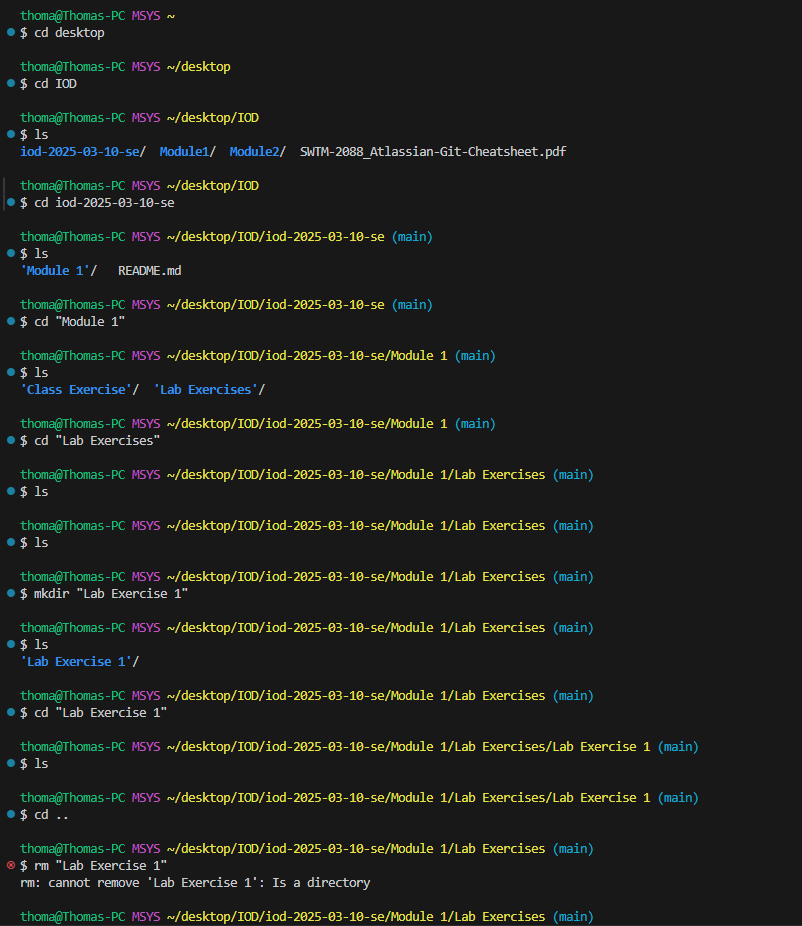
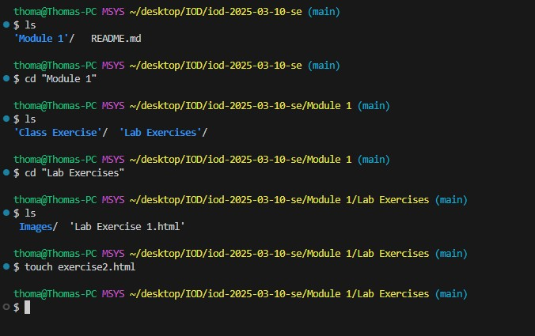

- Open (or create) your Module1 folder in VS Code.
- Use the Terminal feature of VS Code to issue commands to create a new
folder inside Module1 for LabExercises and change into it.
- Inside the above folder, create a new file called exercise2.html
- As the first character in this file, type an exclamation mark ! and use the
Emmet abbreviation to generate a basic HTML skeleton
- Populate the body with basic HTML representing these lab steps
- Go Live to view and test the HTML

